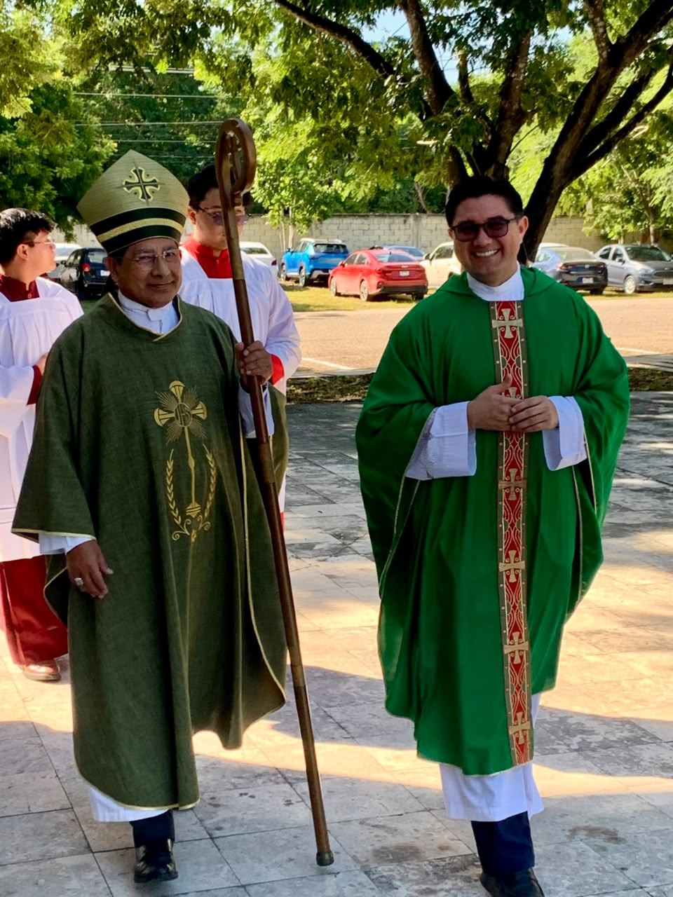
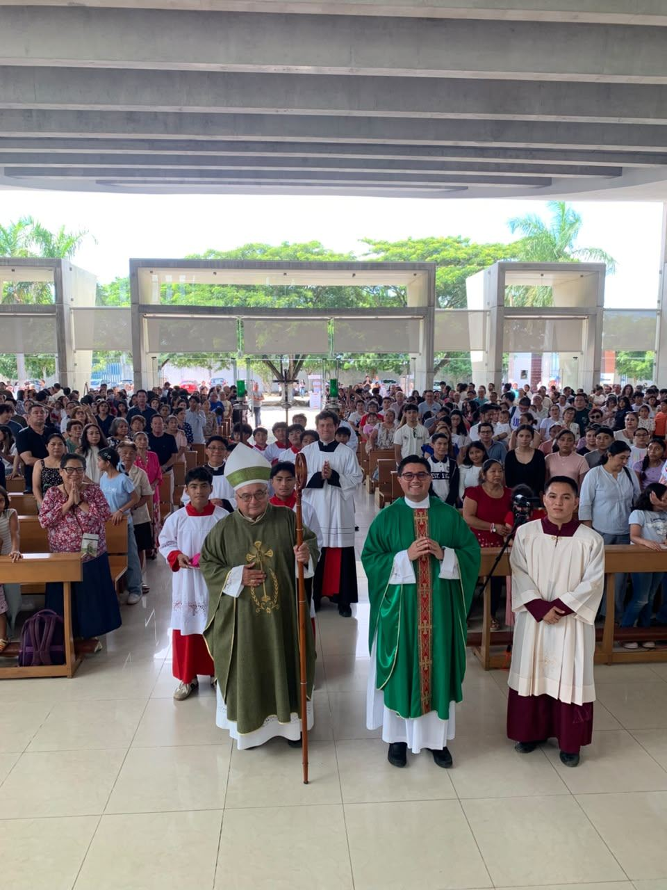

Inicio / Formación
Ruta de Formación
Un itinerario que acompaña a cada joven, desde sus primeros pasos en la vida de fe hasta su configuración plena con Jesucristo Buen Pastor.
Cinco etapas, un mismo llamado
SEM-FAM
Acompañamos a los jóvenes de secundaria que comienzan a descubrir las primeras inquietudes de una posible vocación sacerdotal, junto a sus familias.
Conocer etapaSeminario Menor
Recibimos a adolescentes de preparatoria con inquietudes vocacionales, en un ambiente de convivencia, estudio, oración y crecimiento personal.
Conocer etapaCatecumenal
Profundizamos en el discernimiento vocacional y la formación espiritual, introduciendo a los seminaristas en la experiencia pastoral y comunitaria.
Conocer etapaDiscipular
Fortalecemos las relaciones fraternas mediante la apertura, la confianza y el acompañamiento mutuo, a lo largo de tres años de convivencia.
Conocer etapaConfigurativa
Acompañamos un proceso más profundo de configuración con Jesucristo, Buen Pastor, rumbo al ministerio sacerdotal.
Conocer etapaLlevar nuestra formación a la vida
La formación sacerdotal no se limita a las aulas o a los espacios de oración. También requiere acercarnos a las personas, conocer sus realidades y aprender a servir a nuestra Iglesia. Por eso promovemos experiencias de apostolado que permiten a los seminaristas poner en práctica lo aprendido y desarrollar su compromiso pastoral.
Seminario Mayor
Nuestros seminaristas mayores se incorporan progresivamente a la vida pastoral de la Iglesia, participando en las actividades y necesidades de distintas comunidades.

Seminario Menor
Nuestros seminaristas de San Felipe de Jesús también participan en actividades de apostolado, acercándose al servicio y a la vida de la Iglesia desde su propia etapa de formación.
Cuatro dimensiones para la vida sacerdotal
Creemos que prepararse para el sacerdocio significa crecer en todas las dimensiones de la persona, en un mismo proceso integral, gradual y personalizado.
Humana
Formar personas maduras, responsables, capaces de relacionarse y vivir en comunidad.
Espiritual
Cultivar una relación profunda con Dios mediante la oración, la fe y el encuentro con Jesucristo.
Intelectual
Promover el estudio y la reflexión para comprender nuestra fe y prepararnos para el ministerio.
Pastoral
Desarrollar la capacidad de servir, acompañar y acercarnos a las realidades de la Iglesia y la sociedad.
Vida comunitaria en cada etapa



¿Sientes el llamado a formar parte de esta ruta?
Contáctanos para conocer más sobre el proceso de ingreso y acompañamiento vocacional.